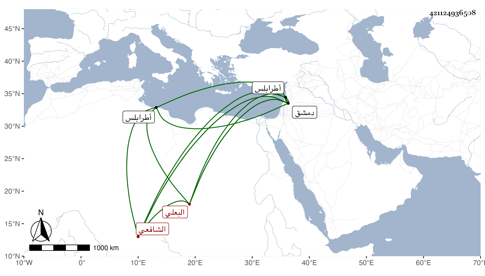

0902Sakhawi.DawLamic.ITO20230111-ara1.EIS1600.421124936508
Biography ID: 421124936508
237
عبد الله بن محمد بن محمد بن محمد بن زيد الجمال بن النور بن الصدر البعلي الشافعي ويعرف بابن زيد . سمع صحيح مسلم على أحمد بن عبد الكريم وكذا سمع على من في طبقته أشياء ثم في سنة إحدى وثمانين وسبعمائة على والده ومحمد بن علي بن اليونانية وعبد الرحمن بن الزعبوب ومحمد بن علي بن حمود ومحمد بن عثمان بن الجردي المائة انتقاء ابن تيمية من الصحيح قالوا أنا الحجار ، وتفقه بابن الشريشي والقرشي وغيرهما بدمشق ودرس وأفتى وولي قضاء بلده قبل اللنك ثم طرابلس ثم دمشق في سنة تسع عشرة ثم في سنة ست وعشرين ولم يلبث في كلها إلا قليلا ولما صرف أخيرا حصل له ذل كثير وقهر زائد وذهب غالب ما كان حصله في عمره ولحقه فالج فاستمر به حتى مات في ربيع الأول سنة سبع وعشرين ومولده تقريبا سنة ستين قال شيخنا في معجمه أجاز في استدعاء ابنتي رابعة . وممن سمع منه ابن موسى الحافظ ورفيقه شيخنا الأبي وترجمه مطولا في إنبائه وقال العيني ولم يكن مشكورا بالعلم ولا بالثبت الكبير ، وقال ابن قاضي شهبة إنه باشر مباشرة لا بأس بها ودارى الناس ثم عزل واستمر على الخطابة وغيرها من المدارس ثم أعيد إلى القضاء ولم يلبث أن انفصل بعد سبعة وأربعين يوما ورجع إلى بلده فكانت وفاته بها ، وترجمه المقريزي في عقوده رحمه الله .
